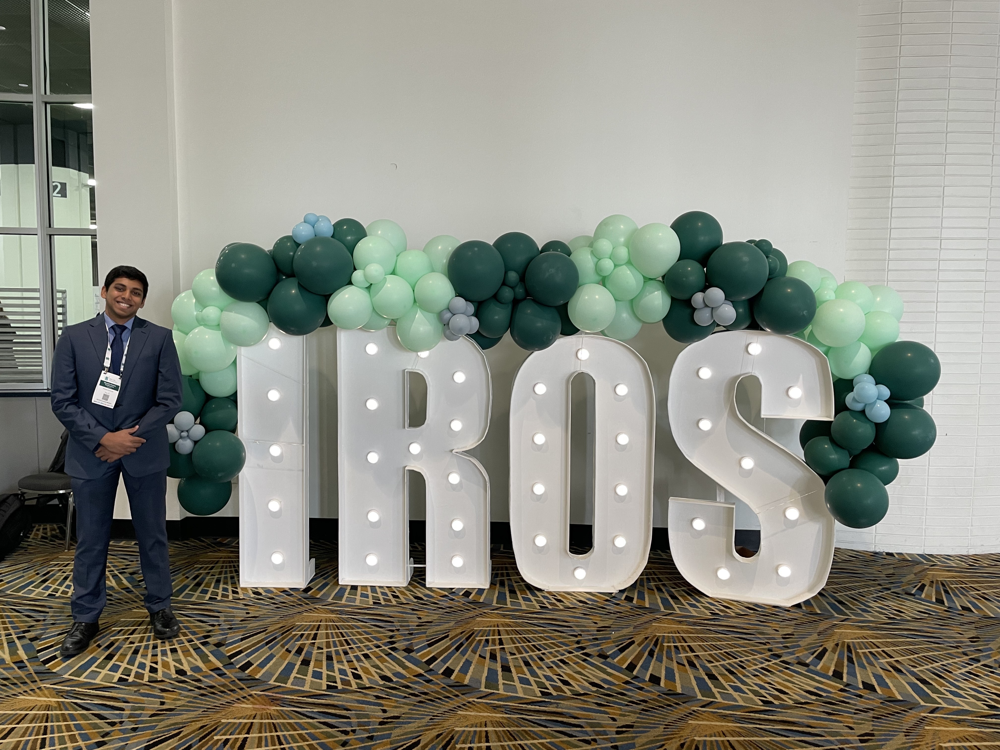
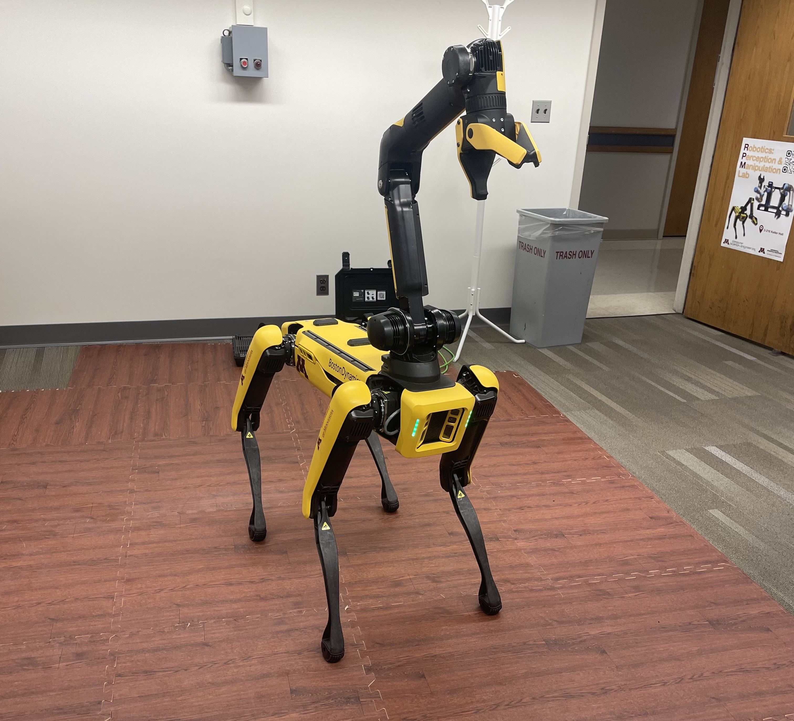

Attended IEEE-IROS 2023!
Posted on: 07/10/2023
Attending IEEE-IROS 2023 was an incredible journey filled with amazing talks, innovative research from worldwide experts, and insights from top robotics and automation companies.

ROS TFs: Reflecting on TFs on the Boston Dynamics Spot
Posted on: 10/08/2023
Over the Summer, with the opportunity to work on the Boston Dynamics Spot, I got to explore a lot of capabilities of Spot. The one that I worked on the most was using TFs appropriately for data collection.